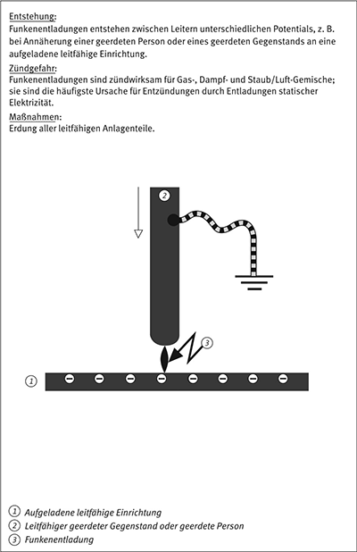
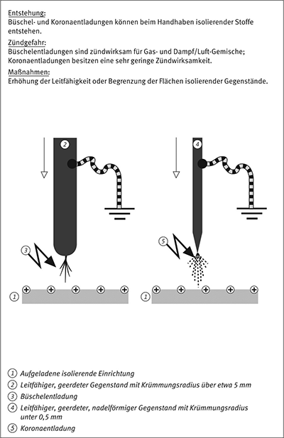
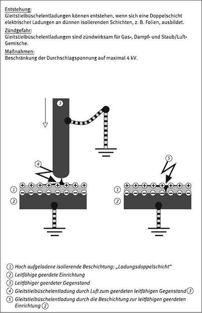
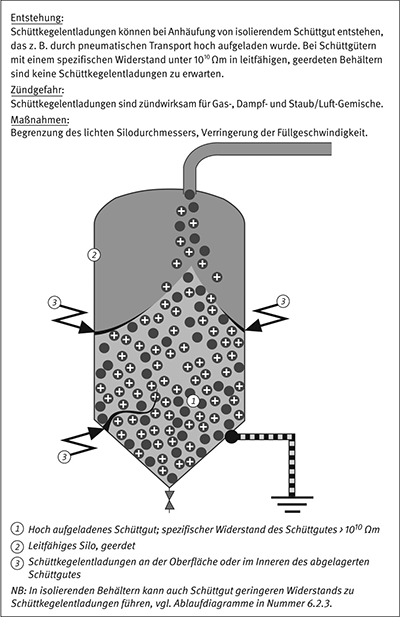

Häufigste Ursache elektrostatischer Aufladung ist die Kontaktaufladung. Kommen z. B. zwei zuvor ungeladene Gegenstände in Berührung, erfolgt an ihrer gemeinsamen Grenzfläche ein Ladungsübergang. Bei der nachfolgenden Trennung der Oberflächen trägt jede Oberfläche einen Teil dieser Ladung, jeweils mit entgegengesetzter Polarität.
Kontaktaufladung kann an allen Grenzflächen zwischen festen und/oder flüssigen Phasen erfolgen. Gase können nicht aufgeladen werden, wohl aber in einem Gasstrom enthaltene Feststoffpartikel oder Flüssigkeitstropfen.
Leitfähige Gegenstände können auch durch Influenz aufgeladen werden, wenn sie sich in einem elektrischen Feld befinden. Eine weitere Möglichkeit der Aufladung besteht durch Ansammeln aufgeladener Partikel oder ionisierter Moleküle.
Die Aufladung von Flüssigkeiten erfolgt im Wesentlichen über die Kontaktaufladung. Typische Beispiele sind der Strom einer Flüssigkeit entlang einer festen Wand, z. B. eines Rohres, einer Pumpe oder eines Filters oder das Rühren, Schütteln, Sprühen oder Zerstäuben von Flüssigkeit. Enthält die Flüssigkeit mindestens eine weitere Phase, z. B. in Form suspendierter Feststoffe oder dispergierter anderer Flüssigkeiten, wird die Aufladung erheblich verstärkt, da die Ausdehnung der Phasengrenzflächen deutlich zunimmt. Normalerweise entstehen gefährliche elektrostatische Aufladungen nur bei Flüssigkeiten geringer elektrischer Leitfähigkeit.
Werden Flüssigkeiten versprüht oder vernebelt siehe auch Anhang A1.3.
In Behältern sind Büschelentladungen zwischen Einbauten und der Oberfläche isolierender Flüssigkeiten nicht zu erwarten, wenn das Potential an der Oberfläche der Flüssigkeit 25 kV nicht überschreitet. Für Gefahrstoffe der Explosionsgruppe IIA werden die auftretenden Entladungen erst ab einem Oberflächenpotential von etwa 58 kV zündwirksam.
Hinweis:
Das Oberflächenpotential ist keine direkt messbare Größe. Es kann bei Kenntnis der Ladungsdichte und der Stoffwerte der Flüssigkeit sowie der Behältergeometrie rechnerisch abgeschätzt werden.
Turbulente Strömungen erzeugen mehr Ladungen als laminare Strömungen. Bei laminarer Strömung einphasiger Flüssigkeiten verhält sich der erzeugte elektrische Strom nahezu proportional zur Strömungsgeschwindigkeit, bei Turbulenz hingegen quadratisch. Turbulente Strömungsvorgänge sind bei industriellen Prozessen üblich. Tritt ungeladene Flüssigkeit in ein Rohr ein, nimmt die Ladungsdichte in der Flüssigkeit mit der Länge des Rohres zu und erreicht – sofern das Rohr ausreichend lang ist – einen konstanten Wert.
Für Flüssigkeiten niedriger Leitfähigkeit, z. B. gesättigte Kohlenwasserstoffe, lässt sich die Ladungsdichte nach folgender Zahlenwertgleichung abschätzen:
ρ∞ = 5 · v
| mit | ρ∞ | = | Ladungsdichte der Flüssigkeit im unendlich langen Rohr (μC/m3) |
| v | = | Geschwindigkeit der Flüssigkeit im Rohr (m/s) |
Ein Rohr kann als unendlich lang betrachtet werden, wenn
L ≥ 3 · v · τ
| mit | τ | = | εr · ε0 / κ |
| L | = | Länge des Rohres (m) | |
| v | = | Geschwindigkeit der Flüssigkeit im Rohr (m/s) | |
| τ | = | Relaxationszeit der Flüssigkeit (s) | |
| ε0 | = | elektrische Feldkonstante (As/Vm) | |
| εr | = | relative Permittivitätszahl (Dielektrizitätszahl) der Flüssigkeit | |
| κ | = | elektrische Leitfähigkeit der Flüssigkeit (S/m) |
Die Formeln können verwendet werden, um die Ladungsdichte einer Flüssigkeit abzuschätzen, die z. B. beim Befüllen eines Tanks aus dem Rohr austritt.
Die Zerteilung eines Flüssigkeitsstrahles in kleine Tropfen kann unabhängig von der Leitfähigkeit der Flüssigkeit stark aufgeladene Flüssigkeitsstrahlen oder Nebel erzeugen. Im Allgemeinen gilt: je leitfähiger die Flüssigkeit, umso stärker die Ladungserzeugung. So erzeugt ein Wasserstrahl mehr Ladungen als ein Ölstrahl. Noch stärkere Aufladungen bewirken mehrphasige Mischungen, z. B. aus Öl und Wasser.
Kontaktaufladung tritt bei Schüttgütern sehr häufig auf. Die Aufladungseigenschaften werden sowohl durch Oberflächeneigenschaften der Partikel als auch durch die chemische Zusammensetzung des Schüttguts selbst bestimmt.
Die Höhe der Aufladung ist normalerweise nur schwer vorherzusehen. Die Aufladungshöhe hängt von der Menge entstehender Ladungen und der Kapazität der Anordnung ab. Mit Aufladungen ist immer dann zu rechnen, wenn Schüttgut von mittlerem bis hohem spezifischem Widerstand mit einer andersartigen Oberfläche in Berührung kommt. Dies ist z. B. beim Mischen, Mahlen, Sieben, Schütten, Mikronisieren und pneumatischen Transport der Fall. Beispiele für die Ladungsmenge, die ein Schüttgut aufnehmen kann, finden sich in der Tabelle 12.
Tabelle 12: Aufladung von Schüttgütern mit mittlerem oder hohem spezifischen Widerstand| Vorgang | Spezifische Aufladung μC/kg |
| Sieben | 10-5 bis 10-3 |
| Schütten | 10-3 bis 1 |
| Transportieren mit Schneckenförderer | 10-2 bis 1 |
| Mahlen | 10-1 bis 1 |
| Mikronisieren | 10-1 bis 102 |
| Pneumatischer Transport | 10-1 bis 103 |
Ladungen, die nicht rekombinieren, zur Erde abfließen oder auf andere Art und Weise abgeleitet werden, verbleiben auf der Oberfläche des aufgeladenen Materials. Ladungen auf isolierenden Materialien bleiben auf Grund des Widerstandes erhalten. Ladungen auf leitfähigen oder ableitfähigen Materialien und Gegenständen bleiben nur erhalten, wenn kein Kontakt zur Erde besteht. Unter normalen Bedingungen sind reine Gase Isolatoren. Sie isolieren Staubpartikel und Tröpfchen, so dass Wolken und Nebel ihre Ladung über längere Zeit behalten.
Häufig wird bei technischen Vorgängen ein Gleichgewicht zwischen der Relaxation von Ladungen und ihrer kontinuierlichen Erzeugung erreicht. Beispielsweise wird das elektrische Potenzial eines isolierten Metallbehälters, in den eine aufgeladene Flüssigkeit oder ein aufgeladenes Schüttgut hineingegeben wird, bestimmt durch die Geschwindigkeiten der Ladungszuleitung und -ableitung. Die entstehende Potenzialdifferenz (Spannung) wird berechnet durch:
U = I · R · (1 - e-t/τ)
| mit | U | = | elektrische Spannung des Behälters (V) |
| I | = | „"elektrostatischer“" Ladestrom (A) | |
| R | = | Widerstand zur Erde (Ω) | |
| t | = | Zeit (s) | |
| τ | = | Relaxationszeit (s) |
Zur Beurteilung einer gefährlichen elektrostatischen Aufladung wird die maximale Spannung herangezogen, welche nach obiger Formel bei großen Zeiten erreicht wird:
Umax = I · R
Ableitwiderstand und Kapazität lassen sich oft messen. Das Produkt
τ = R · C
mit C = Kapazität (F)
kann zur Beurteilung der Aufladungshöhe benutzt werden.
Die Relaxation von Ladungen in einem leitfähigen oder ableitfähigen Behälter mit Flüssigkeit hängt wesentlich von der elektrischen Leitfähigkeit der Flüssigkeit ab. Wird keine Ladung erzeugt, gilt für die Relaxationszeit:
τ = εr · ε0 / κ
| mit | τ | = | Relaxationszeit der Flüssigkeit (s) |
| ε0 | = | elektrische Feldkonstante (As/Vm) | |
| εr | = | relative Permittivitätszahl (Dielektrizitätszahl) der Flüssigkeit | |
| κ | = | elektrische Leitfähigkeit der Flüssigkeit (S/m) |
Zum Beispiel beträgt die Relaxationszeit τ = 18 s für einen Kohlenwasserstoff mit einer Leitfähigkeit von κ = 1 pS/m. Die Erfahrung zeigt, dass selbst bei geringen Leitfähigkeiten und sehr hohen Ladungsdichten Verweilzeiten von 100 s ausreichen, um gefährliche Aufladungen abzuleiten.
Erfahrungsgemäß liegt das elektrische Potenzial an der Grenze einer Staubwolke in Luft bei höchstens 3 · 106 V. Ursächlich ist die Aufladung des Schüttgutes.
Die Ladung sammelt sich auf einem Schüttgut an, wenn die Geschwindigkeit der Ladungserzeugung die der La-dungsableitung übersteigt. Die Relaxationszeit wird bestimmt durch:
τ = εr · ε0 · ρ
| mit | τ | = | Relaxationszeit des Schüttgutes (s) |
| ε0 | = | elektrische Feldkonstante (As/Vm) | |
| εr | = | relative Permittivitätszahl (Dielektrizitätszahl) des Schüttgutes | |
| ρ | = | spezifischer Widerstand des Schüttgutes (Ωm) |
Für ein Schüttgut mit ρ = 1010 Ωm und der Permittivität von 2 · 8,85 · 10-12 F/m beträgt die Relaxationszeit τ, in der 2/3 der angesammelten Ladung zur Erde abgeleitet werden, 0,2 s. Verursacht ein Schüttgut eine Staubwolke, so ist von erheblich längeren Relaxationszeiten auszugehen, die sich nicht berechnen lassen.
Die verschiedenen elektrostatischen Entladungsarten unterscheiden sich erheblich in ihrer Fähigkeit, explosionsfähige Atmosphäre zu entzünden.
Ein Funke ist eine Entladung zwischen zwei Leitern mit einem gut definierten leuchtenden Entladungskanal, durch den ein Strom hoher Dichte fließt. Im gesamten Kanal ist das Gas ionisiert. Die Entladung erfolgt sehr schnell und ist in der Regel deutlich wahrnehmbar. Sie erfolgt, wenn die Feldstärke zwischen den Leitern die elektrische Durchbruchfeldstärke der Atmosphäre übersteigt. Die erforderliche Potenzialdifferenz hängt von der Form und dem Abstand zwischen den Leitern ab. Als Richtwert für die Durchbruchfeldstärke werden 3 · 106 V/m angenommen. Dieser Wert gilt erfahrungsgemäß für ebene Oberflächen oder Oberflächen mit großem Radius in Luft und 10 mm Mindestabstand. Die Durchbruchfeldstärke steigt mit abnehmendem Abstand.
Hinweis:
Beispiel 14 zeigt eine schematische Darstellung der Funkenentladung.
Die Energie des Funkens zwischen einem leitfähigen und einem leitfähigen, geerdeten Gegenstand wird berechnet:
W = 1/2 Q · U = 1/2 C · U2
| mit | W | = | maximale umgesetzte Energie [J] |
| Q | = | Menge der Ladung auf dem Leiter [C] | |
| U | = | Potenzialdifferenz (Spannung) [V] | |
| C | = | Kapazität [F] |
Typische Werte der Kapazität von leitfähigen Gegenständen zeigt die Tabelle 13.
Tabelle 13: Kapazitäten ausgewählter Körper mit beispielhafter Aufladung
| Aufgeladener Körper | Kapazität (pF) | Potenzial (kV) | Energie (mJ) |
| Flansch | 10 | 10 | 0,5 |
| kleine Metallgegenstände, z. B. Schaufel, Schlauchdüse | 10 – 20 | 10 | 0,5 – 1 |
| Eimer | 10 | 10 | 0,5 |
| Kleinbehälter bis 50 l | 50 – 100 | 8 | 2 – 3 |
| Metallbehälter von 200 l bis 500 l | 50 – 300 | 20 | 10 – 60 |
| Person | 100 – 200 | 12 | 7 – 15 |
| große Anlagenteile, von einer geerdeten Struktur unmittelbar umgeben | 100 – 1 000 | 15 | 11 – 120 |
Berechnungsbeispiel:
Ein nicht geerdetes Metallfass wird mit Schüttgut gefüllt. Der Ladestrom I kann 10-7 A und der Ableitwiderstand R des Fasses zur Erde 1011 Ω sowie seine Kapazität 50 pF betragen.
Danach ist mit einem maximalen Potenzial des Fasses von
Umax = I · R = 10 kV,
einer auf dem Fass gespeicherten maximalen Ladung Qmax von
Qmax = C · Umax = 500 nCund einer maximalen Energie Wmax des Entladungsfunkens von
Wmax = 1/2 C · U2max = 2,5 mJ
zu rechnen.
Wmax ist mit der Mindestzündenergie des Schüttgutes zu vergleichen. Zur Beurteilung der Zündwirksamkeit von Funken kann auch die übertragene Ladung Q herangezogen werden.
Hinweis: Stoffbezogene Werte für MZE und MZQ siehe auch Tabelle 18 in Anhang G.

Koronaentladungen entstehen an Oberflächen leitfähiger Gegenstände mit einem kleinen Krümmungsradius, z. B. an scharfen Ecken oder Spitzen, wenn lokal Feldstärken von über 3 MV/m erreicht werden. Da das elektrische Feld mit zunehmendem Abstand schnell abnimmt, ist der Bereich für die Koronaentladung nicht weit ausgedehnt. Koronaentladungen sind schwer und oftmals nur bei Dunkelheit erkennbar.
Hinweis:
Beispiel 15 zeigt eine schematische Darstellung der Koronaentladung.
Ihre Energiedichte ist wesentlich geringer als die der Funken, und in der Regel sind sie nicht zündwirksam. Beim Umgang mit großen Mengen Schüttgut von mittlerem oder hohem spezifischen Widerstand lassen sich Koronaentladungen nicht vermeiden.
Büschelentladungen können auftreten, wenn geerdete Leiter auf geladene isolierende Gegenstände zu bewegt werden, z. B. zwischen dem Finger einer Person und einer Kunststoffoberfläche oder zwischen einem Metallgegenstand und der Oberfläche der Flüssigkeit in einem Tank. Sie lassen sich beim Umgang mit großen Schüttgutmengen von mittlerem oder hohem spezifischem Widerstand nicht vermeiden. Büschelentladungen sind gegenüber Koronaentladungen von kurzer Dauer und können sichtbar und hörbar sein.
Hinweis:
Beispiel 15 zeigt eine schematische Darstellung der Büschelentladung.
Obwohl Büschelentladungen normalerweise nur einen Bruchteil der Energie einer Funkenentladung besitzen, können sie die meisten brennbaren Gase und Dämpfe entzünden. Durch Büschelentladungen werden nach derzeitigem Kenntnisstand keine Stäube entzündet, solange keine brennbaren Gase oder Dämpfe vorliegen. Die Zündwirksamkeit von Büschelentladungen kann durch Messung der übertragenen Ladung Q beurteilt werden. Büschelentladungen sind nicht zündwirksam, wenn die übertragene Ladung Q kleiner als die Mindestzündladung MZQ ist.
Hinweis 1:
In einem homogenen elektrischen Feld ist unterhalb einer Feldstärke von 100 kV/m auch bei Einbringen von feldverzerrenden Einrichtungen nicht mit der Auslösung von Büschelentladungen zu rechnen.
Hinweis 2:
Stoffbezogene Werte für MZE und MZQ siehe auch Tabelle 18 in Anhang G.

Gleitstielbüschelentladungen sind in aller Regel für brennbare Gase, Dämpfe und Stäube zündwirksam und besitzen Energien von bis zu 1 J oder mehr. Erfahrungsgemäß treten die für Gleitstielbüschelentladungen notwendigen hohen Energiedichten unter folgenden besonderen Voraussetzungen auf:
Die Gleitstielbüschelentladung hat häufig eine hell leuchtende, baumähnliche Struktur und wird von einem lauten Knall begleitet. Sie kann sowohl bei sich frei im Raum befindlichen bipolar geladenen Schichten, z. B. Verpackungsfolien, als auch bei Beschichtungen eines leitfähigen Grundkörpers auftreten.
Nach erfolgter Aufladung kann eine Gleitstielbüschelentladung ausgelöst werden durch
Die hohe Energie der Gleitstielbüschelentladung entstammt den bipolar aufgeladenen Oberflächen, die bei einem elektrischen Durchschlag entladen werden.
Erfahrungsgemäß sind folgende Voraussetzungen für eine Gleitstielbüschelentladung erforderlich:
Hinweis:
Beispiel 16 zeigt eine schematische Darstellung der Gleitstielbüschelentladung.
Gleitstielbüschelentladungen können explosionsfähige Atmosphäre aus Gasen, Dämpfen oder Stäuben entzünden. Ihre Energie kann wie folgt rechnerisch abgeschätzt werden:
WGBE = (A · D · σ2)/(2 · εr · ε0)
| mit | WGBE | = | maximale zu erwartende Energie der Gleitstielbüschelentladung (J) |
| A | = | Fläche (m2) | |
| D | = | Schichtdicke (m) | |
| σ | = | Oberflächenladungsdichte (C/m2) | |
| ε0 | = | elektrische Feldkonstante (As/Vm) | |
| εr | = | relative Permittivitätszahl (Dielektrizitätszahl) der Schicht |
An dünnen Farbschichten treten normalerweise keine Gleitstielbüschelentladungen auf.

Prinzipiell können gewitterblitzähnliche Entladungen in großen Staubwolken auftreten; sie wurden in Aschewolken bei Vulkanausbrüchen beobachtet, jedoch bei industriellen Prozessen noch nicht nachgewiesen. Bei experimentellen Untersuchungen konnten solche Entladungen in Silos mit einem Volumen V < 100 m3 nicht festgestellt werden. Auch in beliebig hohen Behältern mit Durchmesser d < 3 m sind gewitterblitzähnliche Entladungen nicht zu erwarten. Theoretische Überlegungen lassen vermuten, dass in größeren Silos oder Behältern gewitterblitzähnliche Entladungen bei Feldstärken über 500 kV/m auftreten können.
Wird hoch aufgeladenes isolierendes Schüttgut in Silos oder große Behälter gefüllt, erzeugt es Bereiche innerhalb der Schüttung mit sehr hoher Ladungsdichte und führt zu starken elektrischen Feldern im oberen Teil der Schüttung. In diesem Bereich können Schüttkegelentladungen auftreten. Sie treten typischerweise in leitfähigen geerdeten Behältern auf und verlaufen radial entlang der Oberfläche der Schüttung, sobald die Feldstärke an der Behälterinnenwand 3 MV/m übersteigt.
Hinweis:
Beispiel 17 zeigt eine schematische Darstellung der Schüttkegelentladung. Beeinflussende Faktoren für Schüttkegelentladungen sind:
Basierend auf der Raumladungsdichteverteilung im Behälter kann unter Berücksichtigung dieser Einflussfaktoren die Feldstärke an der Behälterwand in Modellrechnungen berechnet werden, z. B. mit Hilfe einer finite-Elemente-Methode.
Für metallische Behälter mit einem Durchmesser zwischen 0,5 und 3 m und Schüttgütern mit Korngrößen zwischen 0,1 und 3,0 mm kann die Energie einer Schüttkegelentladung berechnet werden durch:
WSKE = 5,22 · d3,36 · g1,46
| mit | WSKE | = | maximale zu erwartende Äquivalentenergie der Schüttkegelentladung (mJ) |
| d | = | Behälterdurchmesser (m) | |
| g | = | Medianwert der Korngröße (mm) |
Mit zunehmendem Medianwert der Korngröße, z. B. bei Granulat, steigt die Energie für Schüttkegelentladungen.
Schüttkegelentladungen können auch in Behältern aus isolierenden Materialien auftreten. In diesem Fall ist an Stelle des Behälterdurchmessers d der doppelte Wert (2 · d) einzusetzen.
Besonders gefährlich sind Situationen, in denen die Zündenergie für Schüttkegelentladungen durch grobes Korn erzeugt wird und gleichzeitig Feinanteile des Schüttgutes, z. B. Abrieb, mit niedriger Mindestzündenergie vorliegen.
Schüttkegelentladungen können sowohl brennbare Gas- und Dampf/Luft-Gemische als auch Staub/Luft-Gemische entzünden.
